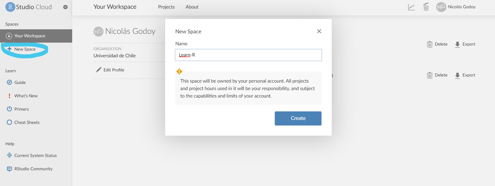

Contenido
1. R
R es un lenguaje de programación y software de código abierto, empleado en procesamiento, análisis y visualización de datos estadísticos, altamente extendibles.
Ventajas:
Las principales ventajas son:
Es un lenguaje de programación destacado en lo que respecta al análisis estadístico
Es de acceso y código abierto
Permite graficar el análisis y los datos estadísticos de forma eficiente y llamativa
Se encuentra en constante actualización y desarrollo
Para descargar R, deben dirigirse al siguiente link, y seguir los pasos de instalación según su sistema operativo. Para el caso de Windows y macOS, se debe descargar el instalador de R, ejecutarlo, y proseguir con la instalación. Lo recomendado es instalarlo en español, y mantener las opciones de instalación que vienen por defecto.

A continuación, se presentan imágenes del proceso de instalación de R en Windows
Se aceptan las condiciones de uso

Se define la carpeta de instalación. Pueden escoger donde deseen realizar la instalación clickeando en examinar; no obstante, se recomienda mantener la ruta predeterminada, en Archivos de programa

Se recomienda seleccionar la Instalación de usuario

Asimismo, también es recomendable no especificar las opciones de configuración

Si se desea, se pueden crear accesos directos. Lo que sí es importante, es guardar el número de versión en el registro, y asociar archivos .RData con R (lo análogo a asociar archivos .sav con SPSS, o archivos .dta con STATA)

Particularmente para el caso de macOS, es indispensable la instalación de XQuartz, pues este software nos permitirá visualizar, por ejemplo, los gráficos que elaboremos en R. Para ello, debemos dirigirnos al siguiente enlace, descargar la última versión disponible del software, y seguir el proceso de instalación. Tal como en el caso de R, lo recomendado es mantener la configuración predeterminada.

Para el caso de Ubuntu, la versión 4.1 de R (que es la actual) viene incluida para gran parte de las versiones de Ubuntu. Para poder ejecutarlas, deben abrir el terminal y ejecutar los siguientes códigos (disponibles en el mirror de Ubuntu):

Siguiendo los pasos anteriores, la instalación de R está finalizada.
Sin embargo, para laborar y aprender de manera más cómoda y eficiente, este curso trabajará principalmente con RStudio.
2. RStudio
Es un ambiente integrado de desarrollo para R (y Python, otro lenguaje de programación, que no se abordará en este curso), que permite visualizar el trabajo llevado a cabo, de manera más cómoda, sencilla y eficiente.
Para instalarlo, deben dirigirse a la siguiente página web. Allí, en la sección All Installers, seleccionar el instalador correspondiente a su sistema operativo.

El proceso de instalación es el mismo que para R. Simplemente, se recomienda mantener todo en predeterminado.
2.1. RStudio Cloud
Sin embargo, también está la opción de trabajar en RStudio Cloud, en caso que sus computadores no presenten los requerimientos mínimimos para trabajar con RStudio de manera local. Para poder trabajar en RStudio Cloud, debemos crear un usuario. Sin embargo, primero crearemos un usuario en GitHub, para luego conectarse a RStudio Cloud desde allí.
Entonces, debemos dirigirnos a la página de GitHub. Allí, debemos hacer click en Sign up.

Una vez allí, debemos ingresar nuestro correo electrónico, y luego seguir los pasos que se encuentran en el correo de confirmación. Es recomendable que creen la cuenta con la dirección de correo electrónico que usen cotidianamente.
Posteriormente, nos dirigimos a la página de RStudio Cloud, y hacemos click en Sign Up.

Volvemos a hacer click en Sign Up

Luego, hacemos click en Sign Up with GitHub

Se nos redirigirá a la página de GitHub, donde debemos ingresar los datos del usuario de GitHub que creamos en pasos anteriores.

Una vez realizado todo lo anterior, ingresaremos a RStudio Cloud. Allí, encontraremos nuestro espacio de trabajo (Your Workspace), donde podremos encontrar nuestros proyectos.

Haciendo click en la pestaña Projects, situada en la pestaña superior, aparecerá el botón New Project. Al pulsarlo, podremos crear un nuevo proyecto.

Luego, se generará el nuevo proyecto. Es importante que renombremos el nuevo proyecto, haciendo click en el recuadro que se encuentra en la sección superior (en este caso, el proyecto se nombró como Proyecto 1).

Para cargar archivos (como bases de datos, o archivos .R), debemos hacer click en el botón Upload, situado en la sección Files situada en la esquina inferior derecha. Aparecerá una ventana emergente, y debemos hacer click en Seleccionar archivo, para explorar en nuestra computadora los archivos que necesitemos para trabajar.

También podemos exportar el proyecto (con todos sus archivos asociados), haciendo click en el botón More (al lado del engranaje). Es importante que hagamos click en las casillas situadas a la izquierda de todos los archivos que deseemos descargar.

En la sección superior derecha, encontraremos un engranaje. En la pestaña Info encontraremos la información general del proyecto; además, podremos agregar una descripción general de este.

A la derecha de Info, encontraremos la pestaña Access. Allí, podremos cambiar quiénes pueden ver el proyecto. Por defecto, solamente quien creó el proyecto puede verlo; sin embargo, podemos permitir que cualquiera (Everyone) pueda hacerlo.

Para poder compartir nuestros proyectos, debemos hacer click en los tres puntos situados a la derecha del engranaje, y luego hacer click en Share Project Link. Aparecerá una ventana emergente, donde podemos agregar las direcciones de correo electrónico de todas las personas que queramos invitar al proyecto. También podemos agregar un mensaje a la invitación.

3. Slack
Este software será el principal medio de comunicación en el marco del curso. Allí, las y los estudiantes podrán plantear todas sus dudas, para que estas puedan ser respondidas de forma colectiva, tanto por parte del equipo docente, como de otras y otros estudiantes.
Primero, debemos descargar el instalador de Slack, dependiendo de nuestro sistema operativo:
En la siguiente imagen, está el ejemplo de Windows (64 bits)

Una vez descargado el archivo, debemos ejecutarlo, y seguir el proceso de instalación. Tal como en el resto de los software instalados, recomendamos mantener todas las opciones de instalación por defecto.
Luego, debemos crear una cuenta de Slack, dirigiéndose a la siguiente página web. Se recomienda usar la dirección de correo que usen de forma cotidiana, a modo de estar al tanto de la actividad en el canal de Slack.

Posteriormente, deben confirmar su correo electrónico y, por último, han de hacer click en el link Unirse a slack de curso, presente en el apartado Syllabus de la página web. Ello redireccionará a la aplicación, abriendo allí el espacio de trabajo del curso.

Una vez realizado aquello, debemos permitir que la página web abra la aplicación de Slack, y se nos redirigirá al espacio de trabajo del curso.

A la izquierda, encontraremos los diversos canales asignados para distintas actividades. Aquellos que tengan a la izquierda un #, son canales abiertos a todas y todos quienes integren el espacio de trabajo; mientras que aquellos que tengan un candado a su izquierda son canales privados. Haciendo click en añadir canales, podemos crear nuevos canales (lo cual pueden hacer cuando, en el futuro, utilicen Slack para sus trabajos personales).

Bajo los canales encontraremos la sección de mensajes directos, donde podremos enviar mensajes privados a cualquier persona que integre el espacio de trabajo. No olviden que pueden comunicarnos todas sus dudas, inquietudes y sugerencias respecto del curso.

En la sección superior derecha encontraremos nuestro usuario.

Si hacemos click, se abrirá una pestaña emergente, donde podremos acceder a diversas configuraciones.

En Modificar tu perfil, podemos cambiar nuestro nombre, describir a qué nos dedicamos, definir nuestros pronombres, entre otros elementos. También, podemos seleccionar una foto de perfil, para que el resto de las personas que integren el espacio de trabajo puedan (re)conocernos.

En la sección de Preferencias, podremos establecer diferentes configuraciones referentes, por ejemplo, a las notificaciones, la barra lateral, o seleccionar distintos temas, para personalizar la apariencia de nuestro espacio de trabajo.

Una vez realizado todo lo anterior ¡Ya estamos listas y listos para empezar a trabajar en el curso!
4. Learn R Youtube
Recuerden que el video de asociado a este práctico y muchos más podrán encontrarlos en el canal de youtube del curso